De ce un model poate obține 99% pe antrenare, dar un scor mult mai mic pe exemple necunoscute? Ce poate face regularizarea și de ce un clasament public nu garantează clasamentul final? Pornim de la exemple vizuale și construim formulele și algoritmii pas cu pas.
Un model bun trebuie să facă predicții corecte pe exemple pe care nu le-a întâlnit niciodată.
Imaginăm un set de perechi (ore de studiu, scor). Scopul nu este să memorăm răspunsurile elevilor din tabel, ci să estimăm corect scorul unui elev nou. Acest lucru se numește generalizare. În clasificare, în locul unui scor numeric, predicem o categorie — de exemplu promovat sau nepromovat.
Pentru a măsura generalizarea, separăm exemplele folosite la învățare de cele folosite la evaluare. Un model poate avea o eroare foarte mică pe antrenare și o eroare mare pe exemple noi: aici apare problema regularizării.
Când modelul este prea simplu sau insuficient antrenat, greșește inclusiv pe datele de antrenare.
Să presupunem că notele cresc aproximativ cu x², dar alegem o dreaptă y = wx + b. O dreaptă nu se poate curba; vor rămâne erori sistematice. În clasificare, o frontieră dreaptă nu poate separa două clase organizate în cercuri concentrice.
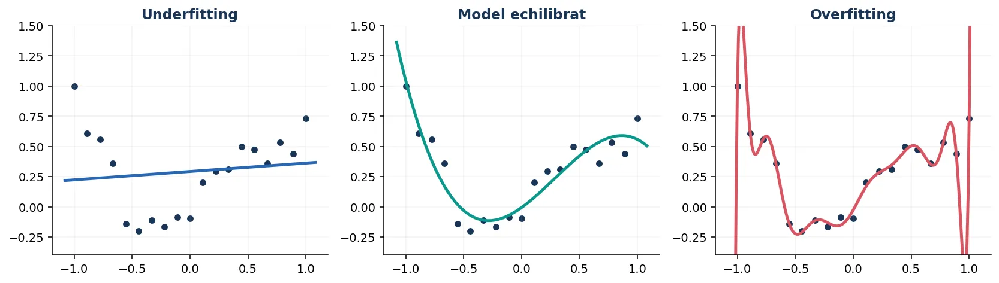
Un model prea flexibil poate potrivi aproape fiecare punct de antrenare, inclusiv fluctuațiile aleatoare.
Într-un set mic de date, un polinom de grad foarte mare se poate răsuci pentru a trece pe lângă fiecare observație. Pe acele puncte eroarea scade, însă între ele predicția devine instabilă. În clasificare, o frontieră foarte complicată poate decupa «insule» în jurul unor exemple izolate etichetate greșit.
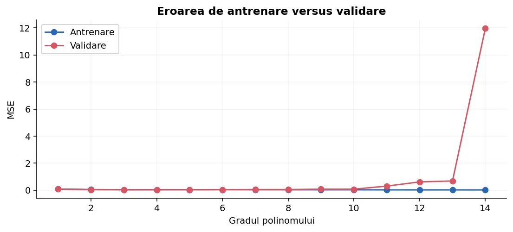
Overfitting și underfitting descriu modul în care învață modelul, nu tipul sarcinii.
| Sarcina | Underfitting | Overfitting |
|---|---|---|
| Regresie: estimarea prețului unui apartament | O singură medie pentru toate apartamentele | Un polinom foarte complex urmărește fiecare fluctuație din anunțuri. |
| Clasificare: detectarea mesajelor spam | Modelul ignoră cuvintele relevante și prezice mereu clasa majoritară | Memorează expresii rare din mesajele de antrenare, fără a generaliza. |
| Clasificare de imagini | Prea puțină capacitate pentru a distinge obiectele | Învață fundaluri, watermarkuri sau artefacte, în locul obiectelor. |
Un model de clasificare poate părea performant folosind numai accuracy într-un set dezechilibrat. De aceea verificăm, după problemă, și precision, recall, F1, matricea de confuzie ori log-loss.
Trei roluri diferite: antrenare, validare și test.
lambda, tipul regularizării și alte hiperparametre.La date puține, putem folosi validare încrucișată (k-fold): antrenăm de mai multe ori, folosind pe rând câte o parte pentru validare, și agregăm rezultatele. Dacă datele provin de la aceeași persoană, același pacient, aceeași secvență video sau același obiect, trebuie să împărțim pe grupuri pentru a evita exemple aproape identice în train și validare.
from sklearn.datasets import load_diabetes from sklearn.model_selection import train_test_split, cross_val_score from sklearn.pipeline import make_pipeline from sklearn.preprocessing import StandardScaler from sklearn.linear_model import Ridge X, y = load_diabetes(return_X_y=True) X_dev, X_test, y_dev, y_test = train_test_split( X, y, test_size=0.20, random_state=42 ) model = make_pipeline(StandardScaler(), Ridge(alpha=1.0)) scoruri = cross_val_score(model, X_dev, y_dev, cv=5, scoring="neg_mean_squared_error") print("MSE mediu la validare:", round(-scoruri.mean(), 2)) # Testul separat se consultă abia după alegerea modelului.
Scorul public este feedback util, dar nu reprezintă o garanție pentru evaluarea finală.
În competițiile care folosesc un public leaderboard și un private leaderboard, scorul public este calculat pe o parte a exemplelor de test ascunse. Scorul final este stabilit pe un alt subset, ale cărui răspunsuri nu sunt disponibile în timpul concursului. Proporțiile și mecanismul exact depind de regulamentul platformei.
Un concurent încearcă 30 de setări și alege configurația cu cel mai bun scor public. Chiar fără să vadă etichetele, reacția repetată la scor oferă informație indirectă despre acel subset. Modelul poate deveni adaptat la particularitățile lui, nu la problema generală. Fenomenul se numește adesea leaderboard overfitting.
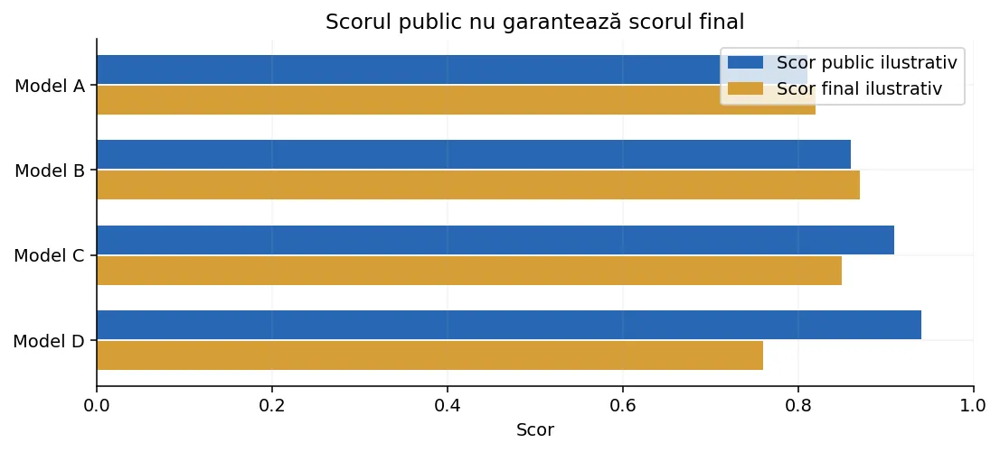
Adăugăm un «preț» pentru coeficienți prea mari, astfel încât modelul să nu fie exagerat de sensibil la date.
În regresia liniară aveam ŷ = wx + b, iar modelul minimiza eroarea de predicție. Dacă avem multe caracteristici, putem obține coeficienți mari, care fac predicțiile să se schimbe puternic la mici modificări ale intrării. Regularizarea favorizează soluții cu coeficienți mai mici.
Simbolul λ (lambda) stabilește cât de mult contează simplitatea. Când λ = 0 nu penalizăm coeficienții. Pentru valori foarte mari, modelul devine prea rigid și poate apărea underfitting.
Penalizarea L2 însumează pătratele coeficienților; coeficienții mari costă disproporționat de mult.
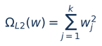
L2 tinde să micșoreze toți coeficienții într-un mod continuu, dar în general nu îi anulează exact. Este potrivită când multe caracteristici aduc câte puțină informație. Atenție: dacă o caracteristică este măsurată în kilometri și alta în milimetri, valorile coeficienților nu sunt comparabile; trebuie standardizate caracteristicile.
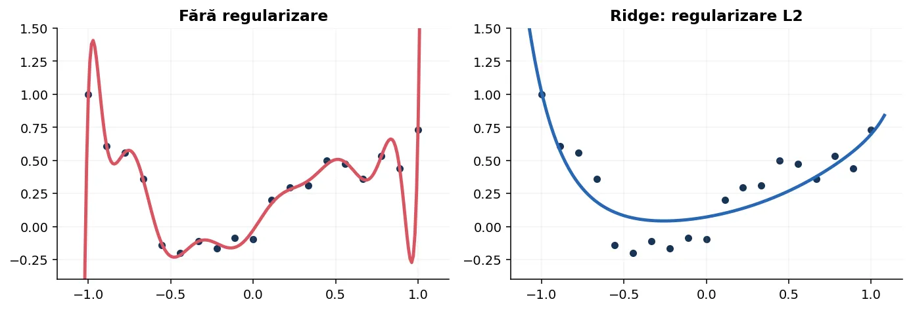
Derivata penalizării L2 este simplă: derivata lui w² este 2w.
Pentru claritate folosim costul 1/(2n) × suma(erorilor²) + λ/2 × suma(w²). Împărțirea la 2 simplifică derivatele, fără să schimbe ideea de minimizare.
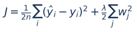
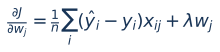
Dacă nu există semnal în date (g = 0), ponderile încă se contractă prin termenul −ηλw. Interceptul se actualizează fără penalizare.
Implementăm formula gradientului fără NumPy, pentru a vedea fiecare operație.
def antreneaza_ridge(X, y, lam=0.1, rata=0.03, epoci=2000): n, k = len(X), len(X[0]) w = [0.0] * k b = 0.0 for _ in range(epoci): gw = [0.0] * k gb = 0.0 for i in range(n): predictie = b for j in range(k): predictie += w[j] * X[i][j] eroare = predictie - y[i] gb += eroare / n for j in range(k): gw[j] += eroare * X[i][j] / n for j in range(k): w[j] -= rata * (gw[j] + lam * w[j]) b -= rata * gb return w, b X = [[1], [2], [3], [4]] y = [2, 3, 3, 5] w, b = antreneaza_ridge(X, y, lam=0.15) print(round(w[0], 3), round(b, 3))
În interiorul buclei calculăm eroarea fiecărui exemplu, adunăm contribuțiile la gradient, apoi adăugăm lam * w[j]. Acesta este singurul adaos față de gradient descent pentru regresia obișnuită.
În penalizarea L1 adunăm valorile absolute ale coeficienților.
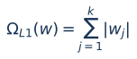
Efectul important: L1 poate face unii coeficienți exact zero. Aceasta echivalează cu eliminarea caracteristicilor din ecuația modelului. Este util dacă avem multe variabile și bănuim că numai câteva contează.
L1 poate alege instabil între caracteristici foarte corelate. Dacă doi senzori măsoară aproape aceeași informație, Lasso poate păstra unul și anula altul; cu alt eșantion, poate inversa alegerea.
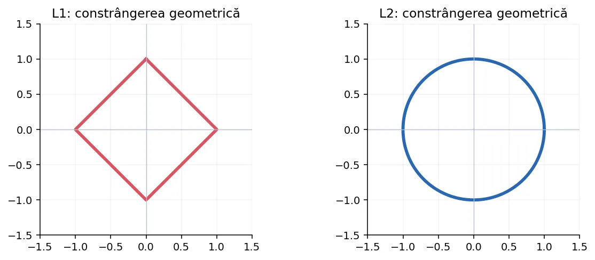
O metodă intuitivă: mai întâi facem un pas pentru eroarea datelor, apoi micșorăm fiecare coeficient spre zero.
def soft_threshold(v, prag): if v > prag: return v - prag if v < -prag: return v + prag return 0.0 def antreneaza_lasso(X, y, lam=0.10, rata=0.01, epoci=4000): n, k = len(X), len(X[0]) w = [0.0] * k b = sum(y) / n for _ in range(epoci): gw = [0.0] * k gb = 0.0 for i in range(n): p = b + sum(w[j] * X[i][j] for j in range(k)) e = p - y[i] gb += e / n for j in range(k): gw[j] += e * X[i][j] / n for j in range(k): u = w[j] - rata * gw[j] w[j] = soft_threshold(u, rata * lam) b -= rata * gb return w, b X = [[-2, 1], [-1, -1], [0, 1], [1, -1], [2, 1], [3, -1]] y = [-3, -1, 1, 3, 5, 7] w, b = antreneaza_lasso(X, y, lam=0.2) print([round(v, 3) for v in w], round(b, 3))
Al doilea predictor alternează între −1 și 1 și nu este important pentru tendința principală. L1 poate împinge coeficientul său către zero. În exemple reale cu multe coloane, efectul este mai evident.
Ambele penalizează coeficienții mari, dar cu efecte diferite.
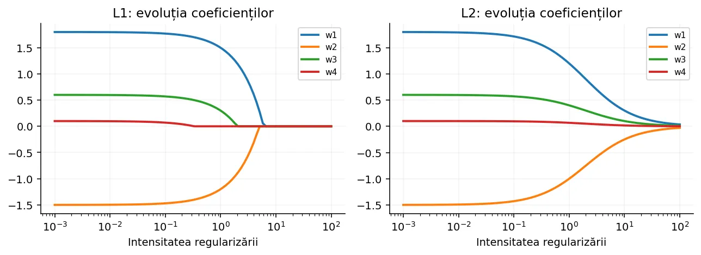
| Aspect | L1 · Lasso | L2 · Ridge |
|---|---|---|
| Penalizare | Suma valorilor absolute | Suma pătratelor |
| Coeficienți egali cu 0 | Frecvent, da | De obicei nu |
| Multe caracteristici puțin utile | Poate selecta | Le poate contracta |
| Predictori puternic corelați | Alegere posibil instabilă | De regulă împarte efectul mai stabil |
| Caz tipic | Multe trăsături, puține relevante | Multe caracteristici fiecare cu semnal slab |
Nu există o garanție că L1 va avea un scor mai mare decât L2 sau invers. Alegerea se face pe validare și depinde de date.
Dacă vrem atât selecție de caracteristici, cât și stabilitate în fața corelațiilor, putem combina cele două penalizări.
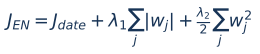
În sklearn.linear_model.ElasticNet, alpha stabilește intensitatea globală, iar l1_ratio este ponderea L1. l1_ratio=1 corespunde Lasso; l1_ratio=0 este limita Ridge în formulă, dar pentru Ridge pur este preferată clasa Ridge.
Elastic Net este util atunci când avem grupuri de caracteristici similare (de exemplu, mai multe măsurători ale aceluiași fenomen) și vrem o combinație de selecție și contracție.
O penalizare asupra coeficienților nu este echitabilă dacă variabilele sunt pe scări radical diferite.
Gândește-te la distanța în kilometri și în milimetri. Pentru aceeași influență asupra predicției, coeficientul asociat milimetrilor este de un milion de ori mai mic. Penalizarea l-ar favoriza artificial.
Standardizarea transformă fiecare caracteristică folosind media și abaterea standard calculate numai din train: z = (x − media_train) / std_train. Datele de validare și test se transformă apoi cu exact aceleași valori.
from sklearn.pipeline import make_pipeline from sklearn.preprocessing import StandardScaler from sklearn.linear_model import Lasso model = make_pipeline( StandardScaler(), Lasso(alpha=0.1, max_iter=20000) ) model.fit([[1, 1000], [2, 1200], [3, 1300], [4, 1500], [5, 1800]], [3, 5, 5, 7, 8]) print(model.predict([[3.5, 1400]]).round(2))
Toate folosesc interfața familiară fit/predict; alegem familia de model și intensitatea regularizării.
from sklearn.datasets import make_regression from sklearn.model_selection import train_test_split from sklearn.pipeline import make_pipeline from sklearn.preprocessing import StandardScaler from sklearn.linear_model import LinearRegression, Ridge, Lasso, ElasticNet from sklearn.metrics import mean_squared_error X, y = make_regression(n_samples=220, n_features=12, n_informative=3, noise=25, random_state=7) Xtr, Xva, ytr, yva = train_test_split( X, y, test_size=0.3, random_state=12 ) modele = { "OLS": LinearRegression(), "Ridge": Ridge(alpha=10), "Lasso": Lasso(alpha=2, max_iter=20000), "ElasticNet": ElasticNet(alpha=1, l1_ratio=0.5, max_iter=20000) } for nume, estimator in modele.items(): model = make_pipeline(StandardScaler(), estimator) model.fit(Xtr, ytr) pred = model.predict(Xva) print(nume, "MSE:", round(mean_squared_error(yva, pred), 2))
Atenție la convenția parametrului alpha. În scikit-learn, funcțiile obiectiv pentru Ridge și Lasso nu folosesc exact aceiași factori de normalizare. Din acest motiv, alpha=1 nu înseamnă aceeași intensitate numerică pentru cele două clase. Nu comparăm direct numerele alpha; le alegem prin validare.
La clasificarea binară, penalizarea se adaugă la log-loss, nu la eroarea MSE.
În LogisticRegression parametrul C este invers legat de intensitatea regularizării: C mic → penalizare mai puternică, C mare → penalizare mai slabă. Nu confunda C cu alpha din Ridge.
from sklearn.datasets import load_breast_cancer from sklearn.model_selection import train_test_split from sklearn.preprocessing import StandardScaler from sklearn.pipeline import make_pipeline from sklearn.linear_model import LogisticRegression from sklearn.metrics import accuracy_score, f1_score X, y = load_breast_cancer(return_X_y=True) Xtr, Xva, ytr, yva = train_test_split( X, y, test_size=0.25, stratify=y, random_state=42 ) model = make_pipeline( StandardScaler(), LogisticRegression(C=0.1, solver="lbfgs", max_iter=3000) ) model.fit(Xtr, ytr) pred = model.predict(Xva) print(round(accuracy_score(yva, pred), 3)) print(round(f1_score(yva, pred), 3))
Pentru penalizarea L1 la LogisticRegression se poate folosi un solver compatibil, cum ar fi liblinear (în binar) ori saga. API-ul diferă între versiuni; verifică documentația instalată. Regularizarea nu rezolvă dezechilibrul claselor, iar evaluarea trebuie să țină cont de cerințele probei.
Regularizarea devine deosebit de utilă când extindem caracteristicile cu puteri și produse.
Un polinom de gradul 5 are mai mulți coeficienți decât o dreaptă. Un grad mare fără regularizare poate urma zgomotul; Ridge îi limitează amplitudinea. Dar dacă funcția reală este foarte neliniară, penalizarea prea puternică poate distruge semnalul.
import numpy as np from sklearn.pipeline import make_pipeline from sklearn.preprocessing import PolynomialFeatures, StandardScaler from sklearn.linear_model import Ridge X = np.linspace(-2, 2, 35).reshape(-1, 1) y = 0.3 * X[:, 0] ** 2 + np.sin(X[:, 0]) model = make_pipeline( PolynomialFeatures(degree=5, include_bias=False), StandardScaler(), Ridge(alpha=1.5) ) model.fit(X, y) print(model.predict(np.array([[0.0], [1.0]])).round(3))
În pipeline, PolynomialFeatures generează mai întâi coloanele noi, iar StandardScaler le aduce pe scări comparabile, înainte de modelul penalizat.
Nu există un lambda universal bun; îl alegem prin validare, nu pe datele finale.
import numpy as np from sklearn.datasets import load_diabetes from sklearn.model_selection import train_test_split, GridSearchCV from sklearn.preprocessing import StandardScaler from sklearn.pipeline import Pipeline from sklearn.linear_model import Ridge X, y = load_diabetes(return_X_y=True) Xtr, Xtest, ytr, ytest = train_test_split( X, y, test_size=0.2, random_state=42 ) pipe = Pipeline([ ("scaler", StandardScaler()), ("model", Ridge()) ]) cautare = GridSearchCV( pipe, {"model__alpha": [0.01, 0.1, 1, 10, 100]}, cv=5, scoring="neg_mean_squared_error" ) cautare.fit(Xtr, ytr) print("Alpha ales:", cautare.best_params_["model__alpha"]) print("MSE cross-validation:", round(-cautare.best_score_, 2)) # Xtest rămâne pentru verificarea finală.
O grilă inițială în ordine de mărime (0.01, 0.1, 1, 10...) este de obicei mai utilă decât valori foarte apropiate. La date foarte mici, scorul pe un singur split poate varia mult; cross-validation reduce dependența de o anumită împărțire.
Regularizarea controlează complexitatea parametrilor, dar nu repară automat designul experimental.
Alte măsuri posibile sunt îmbunătățirea datelor, alegerea unui model potrivit, augmentarea corectă, eliminarea duplicatelor, simplificarea arhitecturii, early stopping sau adunarea mai multor exemple reprezentative.
Un proces disciplinat valorează adesea mai mult decât câteva încercări întâmplătoare de hiperparametri.
Regularizarea pune în balanță potrivirea pe date și complexitatea modelului.
| Observație | Acțiune posibilă |
|---|---|
| Train slab, validare slabă | Verifică underfitting; îmbunătățește caracteristicile sau relaxează regularizarea. |
| Train excelent, validare slabă | Suspectează overfitting; simplifică, regularizează, adună date. |
| Coeficienți instabili și foarte mari | Încearcă Ridge după scalare. |
| Multe caracteristici inutile | Încearcă Lasso/Elastic Net. |
| Public ↑, validare proprie ↓ | Nu te baza doar pe public leaderboard; reanalizează selecția. |
Pentru aprofundare, consultă documentația despre modele liniare scikit-learn, curbele de validare și erorile metodologice frecvente.
Aceeași penalizare L2 se poate aplica la log-loss, nu doar la MSE.
Pentru fiecare exemplu calculăm probabilitatea p = sigmoid(wx+b). Gradientul log-loss față de w este media valorilor (p−y)×x. L2 adaugă λw, exact ca în regresia liniară. Interceptul nu primește penalizare.
import math def sigmoid(z): if z >= 0: return 1 / (1 + math.exp(-z)) t = math.exp(z) return t / (1 + t) def logistic_l2(x, y, lam=0.2, rata=0.2, epoci=1000): w = 0.0 b = 0.0 n = len(x) for _ in range(epoci): gw = 0.0 gb = 0.0 for i in range(n): p = sigmoid(w * x[i] + b) err = p - y[i] gw += err * x[i] / n gb += err / n w -= rata * (gw + lam * w) b -= rata * gb return w, b x = [-2, -1, -0.5, 0, 1, 2, 3] y = [0, 0, 0, 0, 1, 1, 1] w, b = logistic_l2(x, y) print(round(w, 3), round(b, 3)) print(round(sigmoid(0.6 * w + b), 3))
Putem opri antrenarea când performanța pe validare nu mai crește, chiar dacă eroarea de antrenare scade.
La antrenarea repetată a unui model, urmărim două curbe. Dacă eroarea de validare scade, modelul generalizează mai bine. Dacă ulterior validarea începe să crească, păstrăm coeficienții de la cea mai bună epocă, nu neapărat de la ultima.
xtrain, ytrain = [1, 2, 3, 4], [2, 3, 5, 4] xval, yval = [1.5, 3.5], [2.7, 4.3] w, b = 0.0, 0.0 cel_mai_bun = float("inf") parametri = (w, b) rabdare = 80 fara_progres = 0 for _ in range(3000): n = len(xtrain) gw = sum((w * xtrain[i] + b - ytrain[i]) * xtrain[i] for i in range(n)) / n gb = sum(w * xtrain[i] + b - ytrain[i] for i in range(n)) / n w -= 0.02 * gw b -= 0.02 * gb mse_val = sum((w * xval[i] + b - yval[i]) ** 2 for i in range(len(xval))) / len(xval) if mse_val < cel_mai_bun - 1e-8: cel_mai_bun = mse_val parametri = (w, b) fara_progres = 0 else: fara_progres += 1 if fara_progres >= rabdare: break print(tuple(round(t, 3) for t in parametri))
Pentru a nu obține un rezultat optimist, nu alegem toate deciziile pe setul de test. Early stopping folosește un set de validare rezervat acestei sarcini. În competiții, respectăm întotdeauna regulile privind datele permise la antrenare.